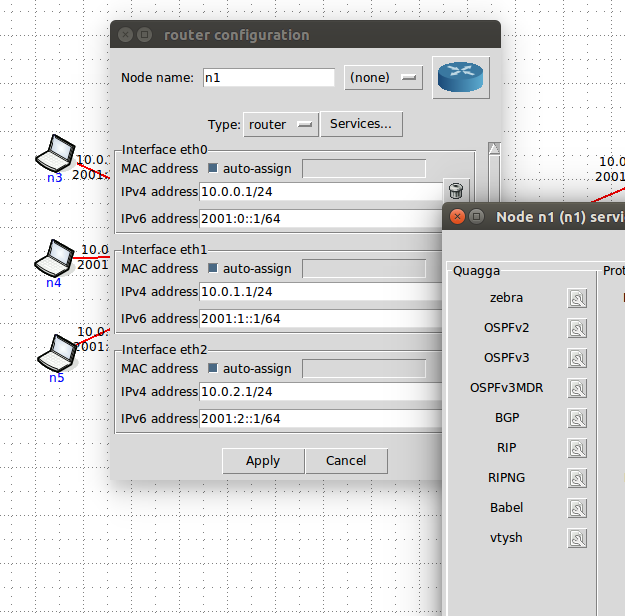

Adressez votre réseau et construisez ses règles de routage
Nous allons repartir de la même topologie que la section précédente :

Avant de lancer l'émulation. Veillez à décocher toutes les options de l'onglet Quagga en faisant un clic droit sur les deux routeurs, puis en cliquant sur Services comme montré ci-dessous :

- Cette fois-ci, vous réalisez le même adressage de réseau en 192.168.x.y/24
- Avant de commencer : combien vous faudra-t-il de sous réseaux, représentés par la valeur x, pour réaliser l'adressage de votre topologie ?
- Vous écrasez ainsi les valeurs automatique de CORE. Vous pouvez le faire soit dans la boite de dialogue comme montré ci-dessus et avant de lancer l'émulation, soit après et en utilisant la commande ifconfig.
- Une fois votre adressage effectué, vous ne pouvez pas pinguer certaines machines de votre topologie. Lesquelles pouvez-vous pinguer et pourquoi ?
- Pour toutes les pinguer, il vous faut mettre en place un routage statique. Pour cela, il ne vous reste plus qu'à configurer : les routes par défaut des machines d'extrémités (la table de routage des machines d'extrémités) et les routes qui doivent être contenues dans la table de routage des deux routeurs. Pour cela référez vous à la page de manuel de la commande route et consultez la section EXAMPLES pour vous aider (pour cela : man route puis tapez /EXAMPLES).